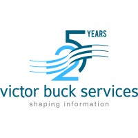

Des fondamentaux fiables pour avancer vite
Gouvernance bancaire, santé et industrie : des cycles de décision courts malgré des exigences strictes.
Coaching produit-tech, facilitation de rituels et partage des responsabilités pour nourrir l'autonomie.
Chaînes CI/CD observables, protection des identités, documentation vivante et plans de continuité éprouvés.
Où je crée de la valeur rapidement
Clarifier les flux critiques (identité, données, conformité) et orchestrer les itérations pour réduire le time-to-value sans sacrifier la sécurité.
- Cartographie des dépendances et accords de service.
- Kit de priorisation orienté risques + bénéfices.
- Coaching produit/engineering managers.
Mettre en place des tableaux de bord lisibles, des rituels productifs et des alertes utiles pour garder le cap dans les environnements changeants.
- Rituels partagés produit, tech, compliance.
- Stratégie de mesure (leading + lagging).
- Plans de réponse incident et revues calmes.
Construire un cadre de progression qui valorise l'apprentissage continu, la documentation vivante et la collaboration inter-équipes.
- Guides de montée en compétences & mentoring.
- Guildes internes, communautés de pratique.
- Templates de feedbacks et revues alignées.
Quelques missions récentes

Engineering Supervisor · Victor Buck Services
Coaching d'une équipe produit-tech de 10 personnes pour refondre l'écosystème d'échanges sécurisés entre banques européennes et leurs clients.
- Déploiement de parcours d'identité renforcés (eIDAS, TOTP) avec indicateurs de réassurance clairs.
- Mise en place d'un train d'initiatives, OKR et governance board partagés.
Founder & Consultant · Nicolas Pieper Engineering
Advisory sur des programmes de transformation numérique : cadrage, architecture, pilotage produit-tech, harmonisation des partenariats.
- Création d'un cadre de discovery continue pour un acteur de l'énergie.
- Coaching d'équipes pluridisciplinaires pour des MVP industriels exportables.
Lead Developer & Technical Leader · Worldline
Modernisation d'un backbone IoT mondial et conception d'une plateforme de reporting bancaire générant plus de 10M de documents mensuels.
- Migration vers des workloads Kubernetes multi-régions et observabilité "follow-the-sun".
- Programme qualité pour orchestrer 1M+ de devices connectés quotidiennement.
Ce que vous pouvez attendre en travaillant ensemble
Nous fixons un rythme confortable mais exigeant : planning trimestriel, revues de valeur toutes les 3 à 4 semaines et synthèses accessibles à tous les sponsors.
- Cadres de priorisation partagés (RICE ajusté aux risques).
- Revues produits "show & learn" pour favoriser la transparence.
Chaque décision est tracée et synthétisée dans un hub commun : briefing stratégiques, CR d'incidents, décisions d'architecture et feedbacks des utilisateurs.
- Templates de memo et fiches "one-page" pour aligner les directions.
- Co-animation d'ateliers avec vos experts métier.
On mesure ce qui compte : indicateurs d'adoption, signaux de confiance et niveaux de risque résiduel. Ces données pilotent les arbitrages sans discussion stérile.
- Balanced scorecard adaptée à votre secteur.
- Playbooks d'expérimentation pour apprendre avant d'industrialiser.
Formation & communauté
Mentor pour des programmes d'accélération et communautés tech (Luxembourg, France, Canada). Organisation d'ateliers autour de l'accessibilité et de la donnée.
Newsletter trimestrielle (design de services régulés) et interventions podcast sur la collaboration produit-tech. Proposez-moi un sujet !